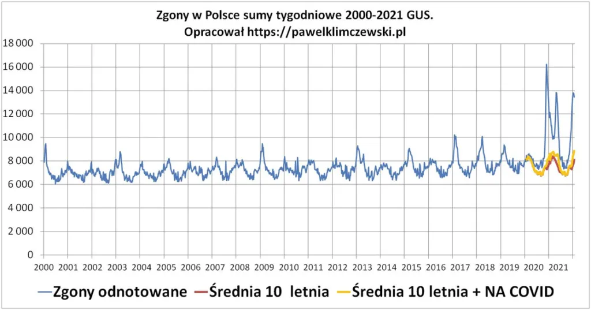

Krajobraz polskiej śmierci w XXI wieku, 100 lat po Malczewskim.
Dużo tabel opublikowałem i wykresów, ale dziś tylko wykres. To najprostszy z możliwych krajobraz polskiej śmierci w XXI wieku. Tydzień po tygodniu na przestrzeni już prawie pokolenia mieliśmy lata lepsze i gorsze.

W każdym tygodniu średnio ok. 8000 zgonów, w zależności od pory roku od 6000 do nawet 10000 przy ciężkich grypach. Każdego roku, przez 52 tygodnie to około 415 000 zgonów. Wiemy, że w ostatnim ponad roku coś poszło nie tak, narysujmy to. Pierwsza kreska to fakty, na niebiesko. Druga kreska jest czerwona, policzyłem średnią dla każdego tygodnia z ostatnich 10 lat, od roku 2010. Statystycy liczbę średnią nazywają też "wartością spodziewaną". W procesie cyklicznym mamy średnią, której spodziewamy się w przyszłości, ale wiemy, że życie płata figle i zawsze coś jest inaczej.
Od roku 2020 mamy zgony "na covid". Więc narysujmy kreskę trzecią na żółto. Do wartości średniej (spodziewanej) dodajmy zgony "na covid". Tak, to żółta linia, nie więcej. Wszytko co wyżej, miedzy linia żółtą a niebieską inne zgony, nie na covid. Wykres wystrzelił w październiku 2020, pół roku po zablokowaniu służby zdrowa. O zgonach "z covid" napisałem juz wiele ostatnio tu: https://pawelklimczewski.pl/2022/01/11/ksiega-liczb-czyli-greckie-numeri/
W porównaniu do średniej 10- letniej zgonów nadmiarowych jest ponad 200 tys. a w nich zgony na covid to 10%.
Paweł Klimczewski